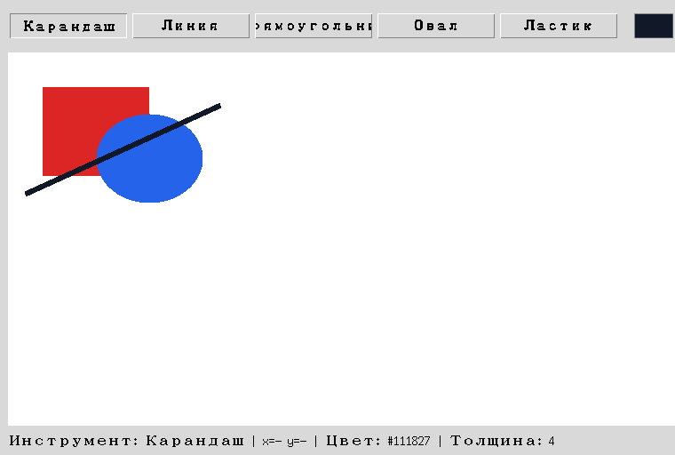
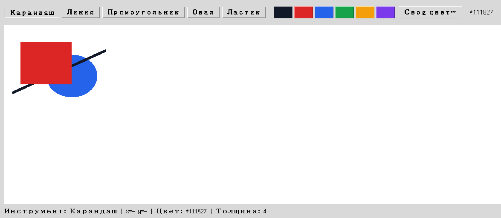

Глава 18 · Инструменты рисования
Порядок наложения
Позже нарисованный элемент оказывается сверху — если не сказать Canvas иначе.
Что нарисовано позже — оказывается сверху
Элементы Canvas хранятся не только как список, но и в определённом ПОРЯДКЕ — том самом, в котором их создали. Если два элемента перекрываются, верхним окажется тот, что был создан позже:

Этот порядок можно изменить явно — поднять элемент выше или опустить ниже остальных:
poryadok_sloev.py
canvas.tag_raise(rect_id) # поднять прямоугольник НАД всеми остальными
canvas.tag_lower(rect_id) # опустить прямоугольник ПОД всеми остальными
canvas.tag_raise(rect_id, oval_id) # поднять прямоугольник только НАД конкретным овалом
Небольшой намёк на слои графических редакторов
Настоящие графические редакторы строят на этой идее целую систему слоёв — со скрытием, блокировкой, группами. Здесь мы не реализуем ничего из этого:
tag_raise/tag_lower — лишь демонстрация того, что порядок наложения существует и им можно управлять, если понадобится.Практика: порядок наложения элементов
Автоматическая проверка — предсказываем итоговый порядок после tag_raise/tag_lower